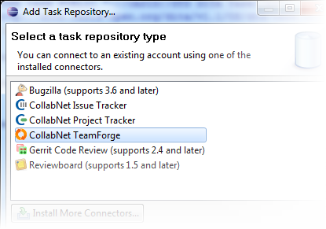
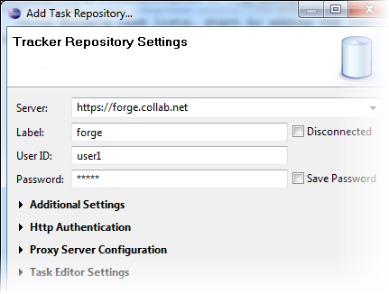

To track TeamForge tracker and other
CollabNet project tasks using Mylyn's task lists, start by adding the repository to the
Task Repositories view.
-
In the Task Repositories view, click the Add
Task Repository icon. Or select the Add Task
Repository option from the view's context menu.
The Add Task Repository wizard opens.
-
Select a repository type, for example CollabNet TeamForge, and click
Next.

-
Enter the URL of your task repository in the Server
field.
For example, https://forge.collab.net for your CollabNet
TeamForge task repository.

-
In the Label field, enter a name for this repository
that will help you distinguish it from any other task repositories you may
connect to.
-
Enter your login name and password.
-
If you are adding a CollabNet TeamForge repository type and want to see all available projects in your site,
de-select Show my projects only under
Additional Settings.
-
If your setup includes a proxy server, or you want to enable HTTP
authentication, provide those details.
-
To make sure your settings are right before proceeding, click
Validate Settings and correct any errors the
application reports.
-
Click Finish.